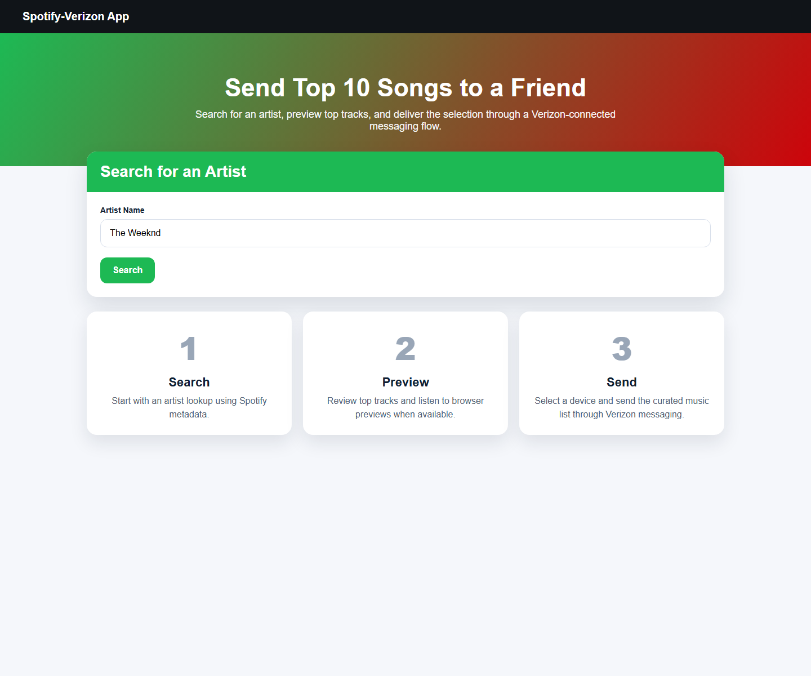
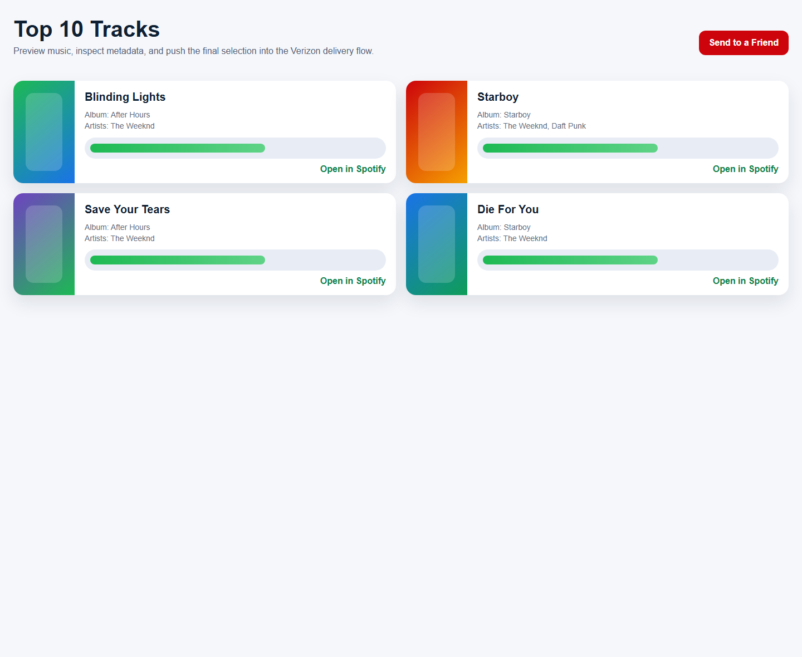

Artist Search View
The landing flow centers on searching for an artist and understanding the three-step user journey from search to message delivery.
A live portfolio preview of a Flask app that connects Spotify artist discovery and top-track browsing with a Verizon messaging delivery workflow.

The landing flow centers on searching for an artist and understanding the three-step user journey from search to message delivery.

The track screen highlights audio preview behavior, Spotify metadata, and the handoff into the Verizon message flow.